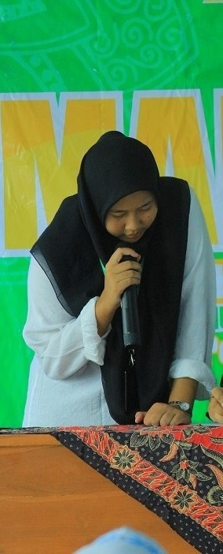
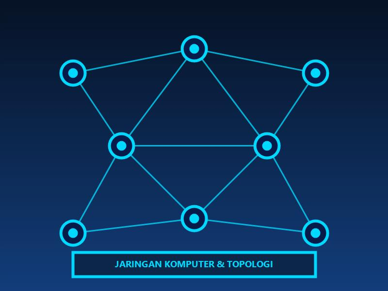
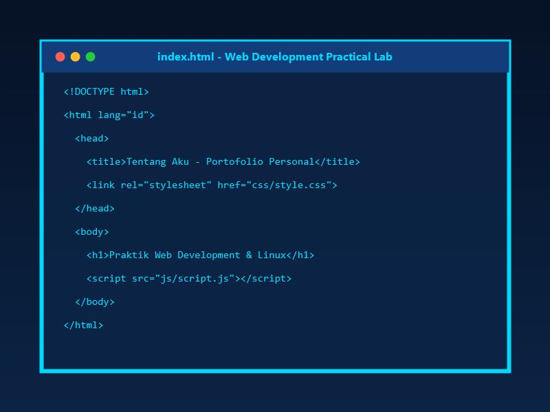
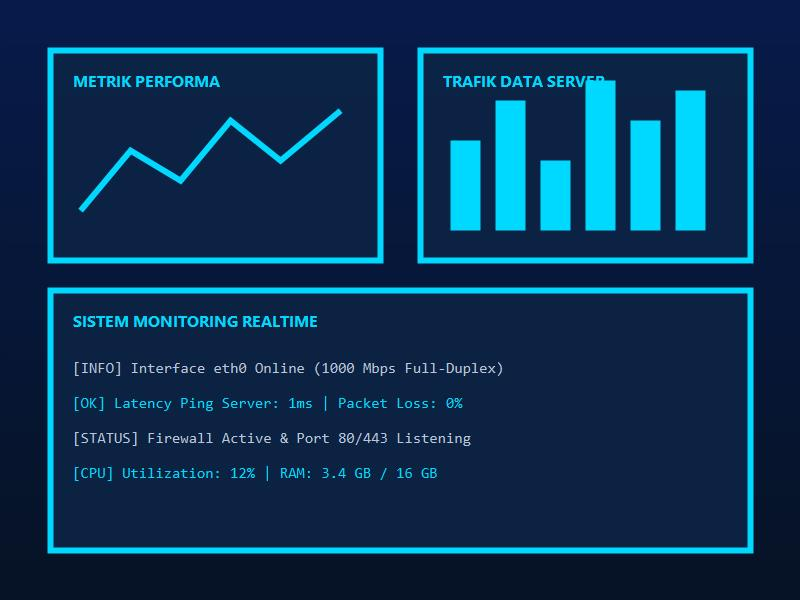

Pelajar yang tertarik dengan teknologi, jaringan komputer, web development, dan berbagai hal baru di dunia digital.

Mengenal latar belakang, semangat belajar, dan biodata diri secara singkat.
Aku adalah seorang pelajar yang sedang belajar di bidang teknologi. Aku tertarik mempelajari jaringan komputer, Linux, web development, dan berbagai teknologi digital.
Bagiku, belajar teknologi bukan hanya tentang menghafal teori, tetapi juga mencoba, membuat, dan memecahkan masalah. Setiap proyek kecil adalah langkah nyata menuju impian masa depan.
Perjalanan akademis dan eksplorasi ilmu pengetahuan dari waktu ke waktu.
Mengenal dasar ilmu pengetahuan, matematika, dan awal mula ketertarikan pada dunia komputer.
Mulai aktif mengeksplorasi penggunaan internet, perangkat keras komputer, serta logika pemograman dasar.
Mendalami Teknik Komputer dan Jaringan, konfigurasi IP, subnetting, OS Linux, dan Web Development.
Melanjutkan pendidikan ke jenjang profesional, meraih sertifikasi kompetensi IT, dan berkarya.
Bidang teknologi yang dipelajari dan dikuasai melalui praktik langsung.
Membuat tampilan website responsif menggunakan HTML, CSS, JavaScript, dan VS Code.
Dasar jaringan komputer, pengalamatan IP Address, pengujian ping, subnetting, dan adapter.
Perintah dasar Terminal Linux, manajemen berkas/direktori (`mkdir`, `touch`, `cp`, `mv`).
Mengenal AI dan menggunakan alat AI sebagai pendamping belajar serta riset proyek IT.
Topik favorit yang tekun saya pelajari beserta pengalaman praktik.

Aku tertarik mempelajari bagaimana perangkat dapat saling terhubung dan bertukar data melalui jaringan secara aman dan efisien.

Aku sedang belajar membuat website menggunakan HTML, CSS, dan JavaScript dengan struktur yang rapi dan desain modern.

Aku tertarik dengan sistem monitoring dan bagaimana data dapat digunakan untuk melihat kondisi serta kesehatan suatu sistem.
Membuat website profil pribadi responsive menggunakan HTML, CSS, dan JavaScript secara mandiri.
Navigasi command line, pengolahan file/direktori, permission, serta konfigurasi dasar sistem Linux.
Pengesetan IP address, konfigurasi adapter jaringan, subnetting, dan analisis koneksi via `ping` & `traceroute`.
Pengalaman belajar dunia kerja IT, melakukan troublehsooting perangkat dan pemeliharaan jaringan sederhana.
Kumpulan foto dokumentasi profil, jaringan, monitoring, dan laboratorium praktik.
“Terus belajar, berkembang, dan menjadi seseorang yang mampu menggunakan teknologi untuk membuat sesuatu yang bermanfaat.”
Memperdalam pemahaman web development, arsitektur jaringan komputer, dan sistem operasi Linux secara konsisten.
Meningkatkan keterampilan teknis melalui praktik proyek nyata, sertifikasi IT, dan kolaborasi tim.
Membuat produk dan proyek teknologi yang mampu menyelesaikan masalah serta memberikan dampak positif bagi orang lain.
Silakan kirim pesan atau terhubung melalui media sosial yang aman berikut.
najwaakmaliya53@gmail.com
@njwaa.Akm
github.com/najwatech